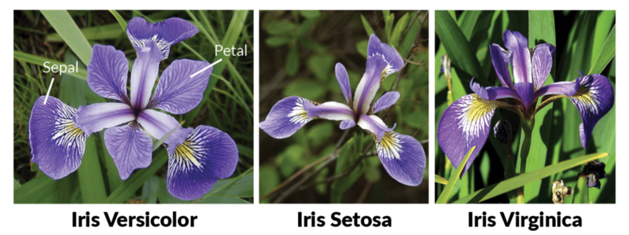

Capítulo 5 Introducción a la estadística
5.6 ¿Cómo saber si mis datos presentan una distribución normal y homogeneidad de las variancias?:
5.6.3 Prueba de Leven (varianzas).
Data
Para la revisión de los estadísticos básicos en R trabajaremos con el dataset iris.
data(iris)
cols<- c("Largo_Sepalo", "Ancho_Sepalo", "Largo_Petalo", "Ancho_Petalo", "Especies")
colnames(iris)<- colsEste conjunto de datos describe tres especies de las flores iris y como cambia el ancho y largo de su pétalo y sépalo. Veamos la estructura de los datos:
## 'data.frame': 150 obs. of 5 variables:
## $ Largo_Sepalo: num 5.1 4.9 4.7 4.6 5 5.4 4.6 5 4.4 4.9 ...
## $ Ancho_Sepalo: num 3.5 3 3.2 3.1 3.6 3.9 3.4 3.4 2.9 3.1 ...
## $ Largo_Petalo: num 1.4 1.4 1.3 1.5 1.4 1.7 1.4 1.5 1.4 1.5 ...
## $ Ancho_Petalo: num 0.2 0.2 0.2 0.2 0.2 0.4 0.3 0.2 0.2 0.1 ...
## $ Especies : Factor w/ 3 levels "setosa","versicolor",..: 1 1 1 1 1 1 1 1 1 1 ...## [1] 150 5## [1] 150## [1] 5Como vemos, posee 4 variables de respuesta y un factor que sería la especie de flor.

5.7 Estadísticos descriptivos
Utilizando la función summary() podemos obtener información sobre nuestra data, como el valor mínimo, máximo, el promedio, la mediana y el rango intercuantil.
## Largo_Sepalo Ancho_Sepalo Largo_Petalo Ancho_Petalo Especies
## Min. :4.300 Min. :2.000 Min. :1.000 Min. :0.100 setosa :50
## 1st Qu.:5.100 1st Qu.:2.800 1st Qu.:1.600 1st Qu.:0.300 versicolor:50
## Median :5.800 Median :3.000 Median :4.350 Median :1.300 virginica :50
## Mean :5.843 Mean :3.057 Mean :3.758 Mean :1.199
## 3rd Qu.:6.400 3rd Qu.:3.300 3rd Qu.:5.100 3rd Qu.:1.800
## Max. :7.900 Max. :4.400 Max. :6.900 Max. :2.500
Si queremos estos datos por aparte o solo nos interesa estos y otros datos de la variable “Largo_Sepalo”, entonces usamos las funciones establecidas en R:
## [1] 5.843333## [1] 4.3## [1] 7.9## [1] 5.8## 25%
## 5.1## 75%
## 6.4
Otros estadísticos descriptivos…
## [1] 0.8280661## [1] 4.3 7.9## [1] 1.3## [1] 0.6856935## [1] 0.1417113
Para conocer la desviación estándar de todas las columnas numéricas, usamos la función apply como anteriormente vimos:
## $Largo_Sepalo
## [1] 0.8280661
##
## $Ancho_Sepalo
## [1] 0.4358663
##
## $Largo_Petalo
## [1] 1.765298
##
## $Ancho_Petalo
## [1] 0.76223775.8 Gráficos descriptivos
Si queremos explorar cómo es la variación de la longitud del sepalo por cada especie:
5.9 Explorando normalidad en los datos
Existen diversas gráficas que podemos realizar para probar o explorar si nuestros datos siguen una distribución normal (también llamada distribución gaussiana) y su gráfica debe tener una forma acampanada y simétrica. La aplicación de muchas pruebas y estadísticos depende de si los datos siguen esta distribución o no. Por esto es importante antes de aplicar cualquier prueba estadística, explorar la distribución de nuestros datos y sí la prueba o estadístico que aplicamos asume que nuestros datos sean normales o no. Para este ejemplo, usaremos el ancho del sepalo en vez del largo del sepalo. ¨


## [1] 16 34Al parecer nuestros datos tienen una distribución normal, según los gráficos, sin embargo, para estar seguros de esto, haremos una prueba llamada test de shapiro que nos permitirá confirmar esto:
##
## Shapiro-Wilk normality test
##
## data: iris$Ancho_Sepalo
## W = 0.98492, p-value = 0.1012
La hipótesis nula que estamos aceptando o rechazando con esta prueba es que la distribución es normal y escogiendo un valor de probabilidad de 0.05 y dado que 0.1012 > 0.05 no podemos rechazar la hipótesis nula. En caso que este valor de p-value < 0.05 entonces los datos no serían normales.
5.10 Correlación y Regresión
Correlación: Describe cómo dos variables están relacionadas. Es una herramienta común para describir relaciones simples sin hacer afirmaciones sobre causa y efecto. Estas relaciones pueden ser o no lineales, pero usualmente se busca o se desea saber si esta relación es lineal.
Por ejemplo queremos saber si existe una relación entre el largo y el ancho del pétalo de estas flores sin importar la especie:
##
## Pearson's product-moment correlation
##
## data: iris$Largo_Petalo and iris$Ancho_Petalo
## t = 43.387, df = 148, p-value < 2.2e-16
## alternative hypothesis: true correlation is not equal to 0
## 95 percent confidence interval:
## 0.9490525 0.9729853
## sample estimates:
## cor
## 0.9628654
Los valores que más nos interesan aquí son el cor y el p-value: Para un valor de cor de +1 quiere decir que dos variables están perfectamente correlacionadas positivamente.
Es decir, al aumentar una, aumenta la otra.
Un valor de -1 significa que las dos variables están perfectamente relacionadas negativamente, es decir, mientras una aumenta, la otra disminuye en la misma medida.
Un valor 0 significa que no hay correlación en las dos variables.
El valor p es la probabilidad de obentener un valor de cor más que extremo que el cor observado, dado los grados de libertad y si cor fuera 0.
Igualmente valores menores a 0.05 son significativos.
Hay otra función que nos permite obtener solo el coeficiente de correlación, de manera más práctica:
## [1] 0.9628654## [1] 0.9376668
Ahora bien, ya sabemos que estas dos variables están correlacionadas positivamente, así que si quiero construir un modelo que permite predecir valores en base a otros no medidos podemos aplicar una regresión lineal.
Una regresión lineal es un modelo lineal que describe la ecuación de dos variables de interés definidas en una función lineal: y = ax + b, donde a es la pendiente y b el intercepto.
La regresión lineal debe aplicarse sobre datos normales.
Así que chequemos la normalidad.
Primero, construimos el modelo y luego graficamos.
El modelo se construye con la variable de respuesta al lado izquiero de la ecuación y la variable que la explique a la derecha divididos por un signo de “~” .
Son solo pocos puntos que se salen de la gráfica, así que asumimos normalidad.
Exploremos el modelo:
##
## Call:
## lm(formula = Ancho_Petalo ~ Largo_Petalo, data = iris)
##
## Residuals:
## Min 1Q Median 3Q Max
## -0.56515 -0.12358 -0.01898 0.13288 0.64272
##
## Coefficients:
## Estimate Std. Error t value Pr(>|t|)
## (Intercept) -0.363076 0.039762 -9.131 4.7e-16 ***
## Largo_Petalo 0.415755 0.009582 43.387 < 2e-16 ***
## ---
## Signif. codes: 0 '***' 0.001 '**' 0.01 '*' 0.05 '.' 0.1 ' ' 1
##
## Residual standard error: 0.2065 on 148 degrees of freedom
## Multiple R-squared: 0.9271, Adjusted R-squared: 0.9266
## F-statistic: 1882 on 1 and 148 DF, p-value: < 2.2e-16Con summary() podemos ver los coeficientes de la ecuación, en este caso son: para el intercepto -0.36 y para la pendiente es 0.41. De nuevo los valores p están por debajo de 0.05. Los coeficientes son la pendiente y el intercepto. Así que la ecuación queda -> Ancho_Petalo = Largo_Petalo*0.4157 - 0.3630
Otro resultado importante es el R cuadrado que nos dice la bondad del ajuste del modelo, esto es la fracción de mis datos que es explicado por el modelo en este caso si miramos el valor ajustado, el modelo explica el 92% de mis datos.
5.11 ANOVA (1 vía)
ANOVA o análisis de varianza es un método estadístico que nos permite comparar las varianzas entre las medias (promedios) de diferentes grupos.
El ANOVA tiene varios supuestos: 1.
Independencia: cada observación es independiente de otra.
(Por ejemplo, si tenemos mediciones del mismo individuo a lo largo del tiempo, esta medida es dependiente al individuo).
2.
Normalidad : Que los datos siguen una distribución normal (como verificamos anteriormente).
3.
Homocedasticidad: varianzas equivalentes entre grupos.
Para la condición 1, en ningún lado nos dice que son muestras longitudinales, es decir, del mismo individuo a lo largo del tiempo, así que asumimos independencia.
Vamos a ver con estas dos gráficas si efectivamente se cumplen las condiciones 2 y 3.
Este gráfico muestra si los residuos tienen patrones no lineales. Si encuentra residuos igualmente distribuidos alrededor de una línea horizontal sin patrones distintos, es una buena indicación de que no tiene relaciones no lineales. La linea roja debe ser más o menos recta, no debe estar curvada, entre más recta mejor.
## Analysis of Variance Table
##
## Response: Ancho_Sepalo
## Df Sum Sq Mean Sq F value Pr(>F)
## Especies 2 11.345 5.6725 49.16 < 2.2e-16 ***
## Residuals 147 16.962 0.1154
## ---
## Signif. codes: 0 '***' 0.001 '**' 0.01 '*' 0.05 '.' 0.1 ' ' 1En un sentido aplicado el número que más nos interesa es el valor F, sin embargo, se ha extendido la importancia del valor p que se define como la probabilidad de encontrar valores F más extremos que el observado y en este sentido la probabilidad es muy baja, mucho menor que el valor establecido como umbral que suele ser 0.05. Así que rechazamos la hipótesis nula, lo que quiere decir que las medias de las especies son diferentes para el ancho del sépalo.
5.12 Prueba de Tukey
ANOVA nos dice que hay diferencias en el ancho del sepalo por especie, pero no nos dice cual es más grande o cuales menor, o cual es diferente a cual.
Para esto hacemos una prueba de Tukey.
La función aov() realiza lo mismo que la de anova().
## Tukey multiple comparisons of means
## 95% family-wise confidence level
## factor levels have been ordered
##
## Fit: aov(formula = modelo_ancho)
##
## $Especies
## diff lwr upr p adj
## virginica-versicolor 0.204 0.04314472 0.3648553 0.0087802
## setosa-versicolor 0.658 0.49714472 0.8188553 0.0000000
## setosa-virginica 0.454 0.29314472 0.6148553 0.0000000
## Warning: package 'agricolae' was built under R version 4.3.2##
## Study: fm1 ~ "Especies"
##
## HSD Test for Ancho_Sepalo
##
## Mean Square Error: 0.1153878
##
## Especies, means
##
## Ancho_Sepalo std r se Min Max Q25 Q50 Q75
## setosa 3.428 0.3790644 50 0.0480391 2.3 4.4 3.200 3.4 3.675
## versicolor 2.770 0.3137983 50 0.0480391 2.0 3.4 2.525 2.8 3.000
## virginica 2.974 0.3224966 50 0.0480391 2.2 3.8 2.800 3.0 3.175
##
## Alpha: 0.05 ; DF Error: 147
## Critical Value of Studentized Range: 3.348424
##
## Minimun Significant Difference: 0.1608553
##
## Treatments with the same letter are not significantly different.
##
## Ancho_Sepalo groups
## setosa 3.428 a
## virginica 2.974 b
## versicolor 2.770 c
Esta función aparte de ver las diferencias de medias nos ordena con letras cual es la mayor y cual es la menor, veamoslo mejor en una gráfica de barras.
5.13 ANOVA (2 vías)
El análisis de varianza de dos vías nos ayuda a estudiar la relación entre una variable dependiente cuantitativa y dos variables independientes cualitativas (factores) cada uno con varios niveles. Este método hace todas las asunciones o supuestos que el ANOVA de 1 vía sobre normalidad y demás. También es importante recalcar que para este tipo los grupos deben tener el mismo número de muestras o réplicas. El ANOVA de dos vías permite estudiar cómo influyen por si solos cada uno de los factores sobre la variable dependiente (modelo aditivo) así como la influencia de las combinaciones que se pueden dar entre ellas (modelo con interacción).
Modelo aditivo: aov(variable_respuesta ~ factor1 + factor2, data)
Modelo con interacción: aov(variable_respuesta ~ factor1 x factor2, data)
Para este ejemplo usaremos el set de datos ‘ToothGrowth’ con el que trabajamos la clase pasada.
## 'data.frame': 60 obs. of 3 variables:
## $ len : num 4.2 11.5 7.3 5.8 6.4 10 11.2 11.2 5.2 7 ...
## $ supp: Factor w/ 2 levels "OJ","VC": 2 2 2 2 2 2 2 2 2 2 ...
## $ dose: num 0.5 0.5 0.5 0.5 0.5 0.5 0.5 0.5 0.5 0.5 ...
Como podemos observar la variable de respuesta aquí sería la longitud de los dientes y los factores a evaluar son ‘supp’ y ‘dose’, supp es la forma en que le dieron la vitamia C a los cerdos, si como OJ (jugo de naranja) o AS (ácido ascórbico) a diferentes dosis (dose) de 0.5, 1 y 2 mg/día.
El factor ‘dose’ o dosis no aparece como factor sino como variable numérica.
Esto puede ser un inconveniente al correr el ANOVA así que modificaremos esto en la data.
ToothGrowth$dose <- factor(ToothGrowth$dose,
levels = c(0.5, 1, 2),
labels = c("D0.5", "D1", "D2"))
head(ToothGrowth)## len supp dose
## 1 4.2 VC D0.5
## 2 11.5 VC D0.5
## 3 7.3 VC D0.5
## 4 5.8 VC D0.5
## 5 6.4 VC D0.5
## 6 10.0 VC D0.5
Bien, visualizaremos nuestros datos para ver las tendencias de nuestros factores sobre nuestra variable de respuesta:
Boxplots
:
Líneas:
Como pudimos ver aparentemente los factores podrían tener una interacción aunque muy level, en este caso podríamos correr una ANOVA dos vías o bien aditivo o bien mutiplicativo si queremos confirmar esta pequeña interacción.
anova1<- aov(len ~ supp + dose, data = ToothGrowth)
anova2<- aov(len ~ supp * dose, data = ToothGrowth)
summary(anova1)## Df Sum Sq Mean Sq F value Pr(>F)
## supp 1 205.4 205.4 14.02 0.000429 ***
## dose 2 2426.4 1213.2 82.81 < 2e-16 ***
## Residuals 56 820.4 14.7
## ---
## Signif. codes: 0 '***' 0.001 '**' 0.01 '*' 0.05 '.' 0.1 ' ' 1## Df Sum Sq Mean Sq F value Pr(>F)
## supp 1 205.4 205.4 15.572 0.000231 ***
## dose 2 2426.4 1213.2 92.000 < 2e-16 ***
## supp:dose 2 108.3 54.2 4.107 0.021860 *
## Residuals 54 712.1 13.2
## ---
## Signif. codes: 0 '***' 0.001 '**' 0.01 '*' 0.05 '.' 0.1 ' ' 1
Como notamos tanto el modelo aditivo como multiplicativo, los factores explican de buena manera la varianza de nuestra variable.
Sin embargo en el modelo multiplicativo, que es el que nos muestra la interacción, nos dice que efectivamente hay una interacción entre nuestros factores (aunque muy pequeña), es decir, que el efecto de un factor depende del otro factor.
Las pruebas que realizamos anteriormente son de las comunes aplicadas para los conjuntos de datos, pero hay otras que podemos realizar también, por ejemplo en el caso de datos normales para hacer pruebas pareadas (dos niveles) podemos utilizar tambien t.testo en caso de no ser normales wilcoxon.test, en el caso de mas niveles para no parametricas podemos usar kruskal.test.
Por ejemplo:
#dos niveles
t.test(len ~ supp, data = ToothGrowth, paired = TRUE)
wilcox.test(len ~ supp, data = ToothGrowth, paired = TRUE)
#más de dos niveles
kruskal.test(len ~ dose, data = ToothGrowth)
Hay otras pruebas que se aplican dependiendo de los datos que tengamos y el objetivo de nuesto pregunta de investigación por ejemplo Dunn.test, Duncan.test, Welch.test, entre otros.
Hay muchos paquetes además de los que trae por default R stats (que viene por default con R) tales como agricolae, vegan, emmeans , entre otros, que vienen con más funciones y pruebas aplicadas a datos biológicos, ecológicos, entre otros.